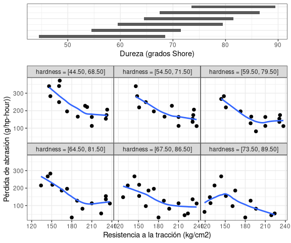

|||||| Work in progress |||||| En construcción ||||||
|||||| Work in progress |||||| En construcción ||||||
Web: https://mpru.github.io/ggcleveland/
Este paquete implementa algunas funciones para crear las versiones en ggplot2 de algunos gráficos presentados por Cleveland en su libro “Visualizing Data”. Ha sido creado para ser usado en cursos de Análisis Exploratorio de Datos. Se encuentra en desarrollo y aún no ha sido usado con diversos conjuntos de datos. Cualquier comentario o sugerencia es bienvenida.
This package provides functions to produce ggplot versions for some visualizations tools described in Cleveland’s book “Visualizing Data”. It is an experimental package, and was thought to be used in the context of a course on exploratory data analysis. Any contributions or feedback are appreciated.
Instalación / Instalation
Se puede instalar la versión en desarrollo del paquete ggcleveland desde GitHub con:
Ejemplos / Examples
gg_quantiles
La función gg_quantiles() produce gráficos QQ (cuantil-cuantil) para comparar la distribución de una variable cuantitativa en dos o más grupos:
# Paquetes, datos y configuraciones
library(ggcleveland)
library(ggplot2)
library(dplyr)
#>
#> Attaching package: 'dplyr'
#> The following objects are masked from 'package:stats':
#>
#> filter, lag
#> The following objects are masked from 'package:base':
#>
#> intersect, setdiff, setequal, union
theme_set(theme_bw() + theme(panel.spacing = unit(0, "lines")))
data("futbol")
# Dos grupos
futbol2 <- dplyr::filter(futbol, longp %in% c("< 0.81 m", "0.81 a 0.90 m"))
gg_quantiles(futbol2, dist, longp)
# Más de dos grupos
gg_quantiles(futbol, dist, longp, size = 0.4, color = "red", shape = 3) +
labs(title = "Gráficos QQ de a pares", x = "Distancia (m)", y = "Distancia (m)")
También permite graficar los cuantiles de cada grupos vs cuantiles calculados con todos los grupos combinados. Esto puede ser útil para estudiar residuos luego de algún ajuste:
futbol <-
futbol %>%
group_by(longp) %>%
mutate(ajuste = mean(dist), res = dist - ajuste)
gg_quantiles(futbol, res, longp, combined = TRUE) 
gg_tmd
La función gg_tmd() produce el gráfico de medias-diferencias de Tukey (Tukey’s Mean-Difference Plot):


gg_rf
La función gg_rf() produce un residual-fit plot (gráfico de residuos y valores ajustados):
# Agregando las observaciones centradas por la media general
gg_rf(futbol, dist, ajuste, res, cen_obs = TRUE, ylabel = "Distancia (m)")

gg_pt
La función gg_pt() produce un gráfico para evaluar transformaciones de potencia, que consisten en elevar a las observaciones a un conjunto de potencias señaladas en el argumento taus, en el cual el valor 0 indica la transformación logarítmica: